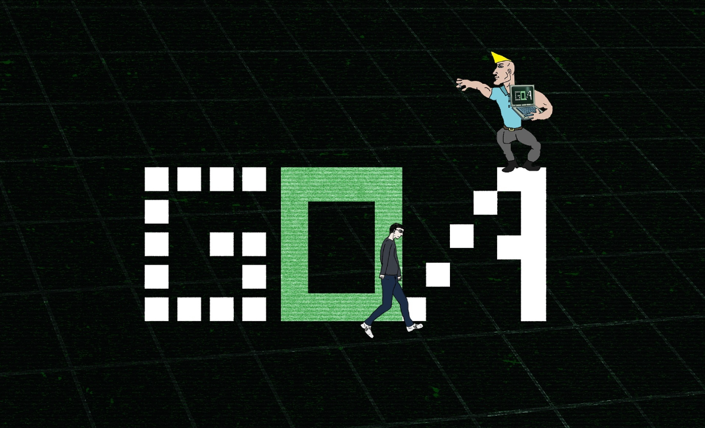
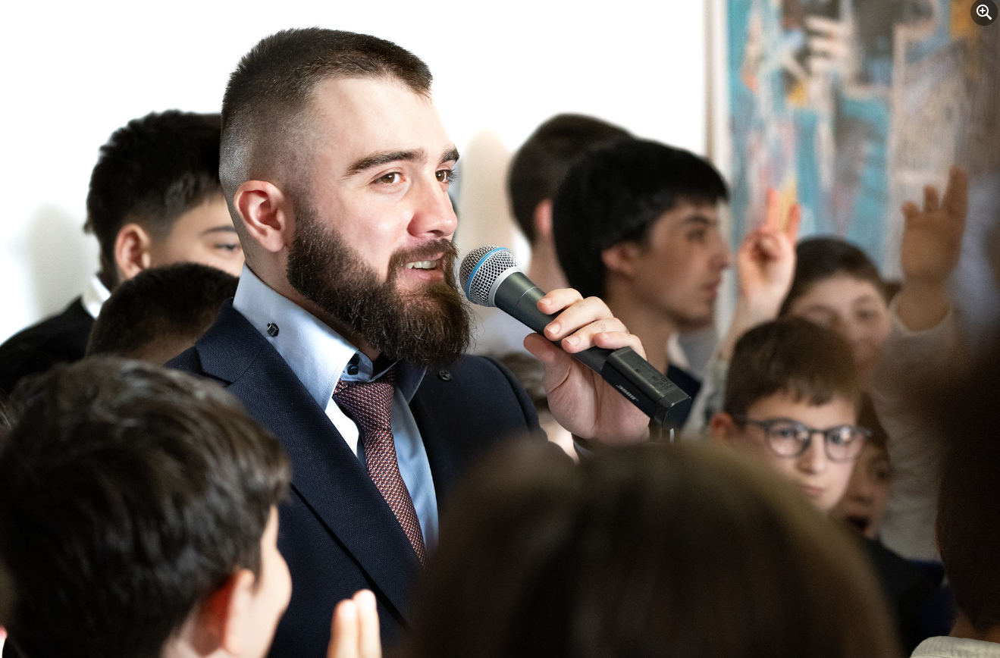

Goal Oriented Academy
Goal-Oriented Academy is one of the best programming academies. Here children not only learn programming, but also make friends, The lessons are fun and the most important thing is if the child doesn't understand somethingLeaders explain unclear issues to him.
💚Goal-Oriented Academy • GOA is a place where children are formed into successful and worthy people. 🧠They gain a lot of value in addition to learning programming and technical skills and easily apply them on their way to success. Goal-Oriented Academy • In GOA, the selection of the September stream begins. Write to us and find out what values we offer. 👨🎓The places are limited. Children will have to pass qualifying stages in advance.
💚 Goal-Oriented Academy • GOA creates the best environment for children in Georgia. Attending our classes makes every child happy. They have one soul when the next lesson will be. 👐✍️They create a great future together. Our main mentor Nika Keshelava always takes care of children's spiritual and physical development. Puts you on the right track and constantly helps you solve problems. 🌞🌅All parents of GOA children feel happy and calm because their child is in reliable hands. ✍️Join us at Goal-Oriented Academy • GOA. Become the best
 